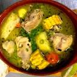

SANCOCHO DE GALLINA
What is a the SANCOCHO DE GALLINA?
Sancocho de Pollo o Gallina is a popular dish in Colombia. It's a hearty and filling chicken soup made with potatoes,
plantain, corn, yuca, herbs and chicken or hen. This one pot meal is delicious served with avocado on the side.
Sancocho is a common Colombian and Latin dish that you can make with fish, plantain, beef, chicken,
pigeon peas or pork. Sancocho de Gallina or Sancocho Valluno is originally from the Colombian Region El Valle.
Traditionally this soup is made with hens, but you can use chicken too.
SANCOCHO DE POLLO INGREDIENTS
This soup recipe calls for basic ingredients you may have on hand and it's easy to make.
The full printable recipe card with ingredients list and directions is below.
- Corn: I like to use fresh corn on the cob, but if you can't find it use frozen corn
- Water: You can use chicken or vegetable broth if you prefer more flavor.
- garlic, Aliños
- Chicken: I like to use a whole chicken, but you can use just legs, thighs o breast. Use your favorite chicken pieces.
- Spices: Salt and pepper
- Plantains: Green plantains
- Chicken bouillon: Cubes or ground, if you use chicken broth omit this ingredient.
- Yuca: I like to use frozen yuca, because is already peeled and I always have it in my fridge. But you can use fresh yuca if you prefer.
- Potatoes: I like to use white potatoes, but feel free to use your favorite.
- Herbs: Fresh cilantro, if you don't like cilantro use parsley.
Recipe instructions
- In a large pot, place the chicken, corn, aliños, chicken bouillon, salt and green plantain. Add the water and bring to a boil, then cover and reduce heat to medium and cook for about 30 to 35 minutes.
- Add the potatoes, yuca and pepper and continue cooking for 30 more minutes or until the yuca and potatoes are fork tender. Stir in the cilantro.
- Taste and adjust the seasoning. Serve in large soup bowls, dividing the chicken and vegetables evenly. Sancocho de Gallina o Pollo
Return to top
Return to main page